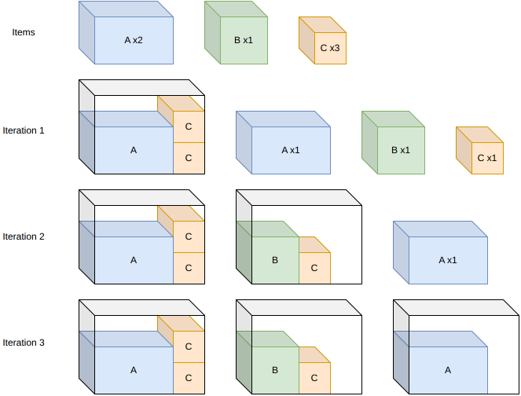
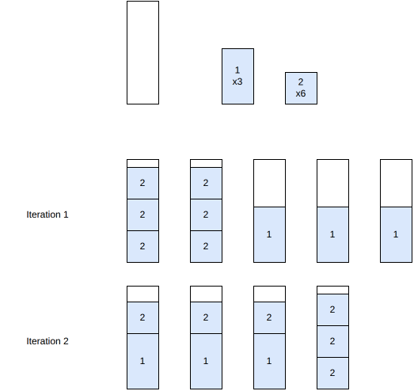

Generic algorithms¶
The following algorithms are conceptually the same across all domains: each one solves a multi-bin problem by repeatedly solving single-bin (knapsack) sub-problems of the same domain.
Sequential single knapsack¶
This algorithm solves the knapsack, bin-packing, bin-packing-with-leftovers and variable-sized-bin-packing objectives.
It iteratively generates new solution bins by solving a knapsack sub-problem with the remaining items for each remaining bin type. Once all items have been packed, it restarts and puts more effort into the sub-problems.


Sequential value correction¶
This algorithm solves the knapsack, bin-packing, bin-packing-with-leftovers and variable-sized-bin-packing objectives.
It is closely related to sequential single knapsack, but instead of restarting with a larger search effort, it restarts by increasing the profit of the items that were packed in high-waste bins, so that they get packed earlier in the next pass and hopefully generate less waste.


Dichotomic search¶
This algorithm solves the variable-sized-bin-packing objective.
It searches, by dichotomy, for the smallest achievable waste percentage: for a given waste estimate, it deduces which bins would be needed to reach that quantity of waste, and solves a bin packing sub-problem restricted to those bins.

Column generation¶
This algorithm solves the knapsack, bin-packing and variable-sized-bin-packing objectives.
This is a tree search algorithm. At each stage, a new bin is added to the solution. Bins are generated dynamically at each node through column generation, the pricing problems being single-bin knapsack problems.

Sequential feasibility¶
This algorithm solves the bin-packing, bin-packing-with-leftovers, open-dimension-x, open-dimension-y and open-dimension-xy objectives with an algorithm solving the feasibility objective.
It repeatedly solves a feasibility sub-problem asking whether all the items fit into a shrinking amount of space, and stops as soon as a sub-problem turns out infeasible.